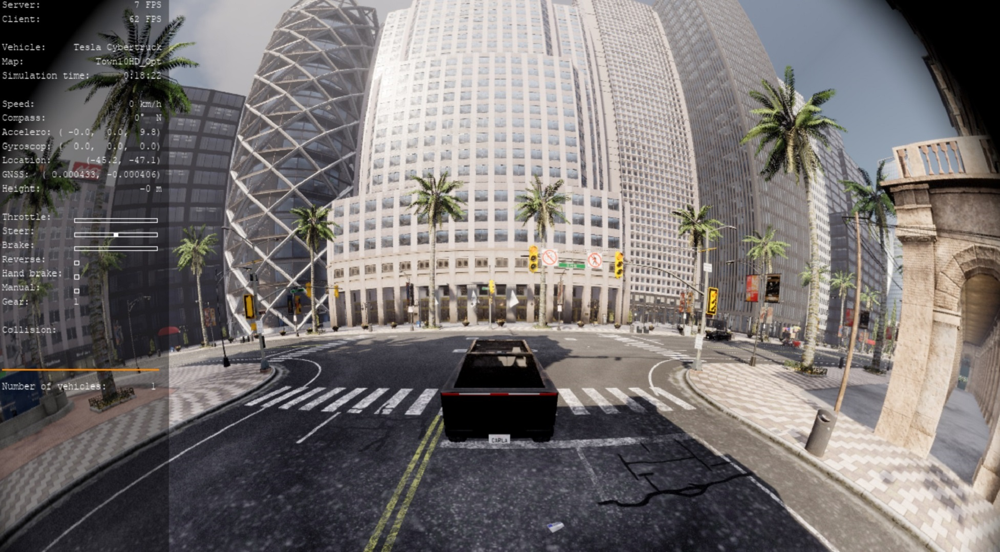

鱼眼相机¶
实现比传统相机视野更广的相机。
实现原理¶
参考 基于KB模型的相机内参 和 鱼眼校准基础知识 ， Kannale-Brandt 模型通过考虑镜头畸变来扩展理想的针孔模型，以代表真实的相机。 畸变点(distorted)为( x_{d}, y_{d} )，其中 $$ x_{d} = \frac{\theta_d}{\gamma} \times x $$
其中，归一化图像坐标中未失真像素的位置为 (x,y) ： $$ \gamma = x^2 + y^2 $$
这里的 k_1, k_2, k_3, k_4 是镜头的畸变系数，atan 为反正切（与x轴的夹角）。
实现步骤¶
参考 添加新传感器 。
0- 虚幻引擎端的修改¶
更新3个虚幻引擎的源代码：
-
Engine/Shaders/Private/SimpleElementPixelShader.usfUnreal Shader(.usf, 着色器) 文件。 其中函数
void CubemapTexturePropertiesFisheye()实现了鱼眼相机的畸变模型： $$ x = x_d \frac{r}{\theta _d} = \frac{r}{\theta (1 + k_1 \theta^2 + k_2 \theta^4 + k_3 \theta^6 + k_4 \theta^8)}
$$ 代码实现 ：theta = r / (1.0f + d1*th2 + d2*th4 + d3*th6 + d4*th8);。 Engine/Source/Runtime/Engine/Public/CubemapUnwrapUtils.h
1- 创建新传感器 ¶
为新的 C++ 类创建两个文件：
Unreal/CarlaUE4/Plugins/Carla/Source/Carla/Sensor/FisheyeSensor.hUnreal/CarlaUE4/Plugins/Carla/Source/Carla/Sensor/FisheyeSensor.cpp
2- 传感器数据序列化器 ¶
这个类只需要有两个静态方法，序列化Serialize和反序列化Deserialize。我们将为它添加两个文件，这次是位于 LibCarla 模块中：
序列化函数 Serialize 输入为一个传感器Sensor，返回一个缓冲区Buffer。
#pragma pack(push, 1)
struct ImageHeader {
unsigned width;
unsigned height;
float fov_angle;
};
#pragma pack(pop)
#pragma pack(pop) 恢复之前的对齐方式。
unsigned若省略后一个关键字，大多数编译器都会认为是 unsigned int。
3- 传感器数据对象 ¶
LibCarla/source/carla/sensor/data/ImageCube.hLibCarla/source/carla/sensor/data/ImageTmplCube.hLibCarla/source/carla/image/ImageConverterCube.hLibCarla/source/carla/image/ImageViewCube.h
4- 注册传感器 ¶
-
LibCarla/source/carla/sensor/SensorRegistry.h将CarlaUE4中的鱼眼相机传感器参与者AFisheyeSensor和LibCarla中的图像序列化器组合成一个单一的对象：
std::pair<AFisheyeSensor *, s11n::ImageSerializerCube>。
5- 使用示例 ¶
启动后按数字键2，则显示鱼眼相机画面：

问题¶
使用官网中的 PR 的代码进行编译，报错：D:\work\workspace\carla\Unreal\CarlaUE4\Plugins\Carla\CarlaDependencies\include\carla/streaming/detail/tcp/ServerSession.h(70): error C2338: This function only accepts arguments of type BufferView.：
解决：需要使用GimpelZhang 的中的FisherSensor.cpp
报错：D:/work/workspace/carla/Unreal/CarlaUE4/Plugins/Carla/Source/Carla/Sensor/V2XSensor.cpp(189): error C2653: “UCarlaStatics”: 不是类或命名空间名称
D:/work/workspace/carla/Unreal/CarlaUE4/Plugins/Carla/Source/Carla/Sensor/V2XSensor.cpp(189): error C3861: “GetCurrentEpisode”: 找不到标识符
临时解决办法：注释掉这一块代码，只保留
if (!ActorPowerList.empty())
{
}